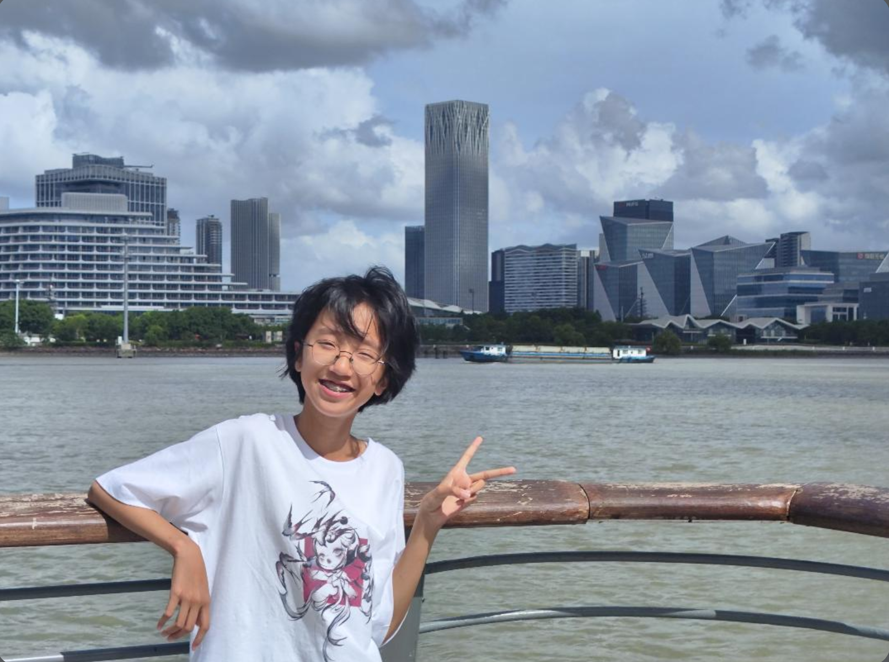
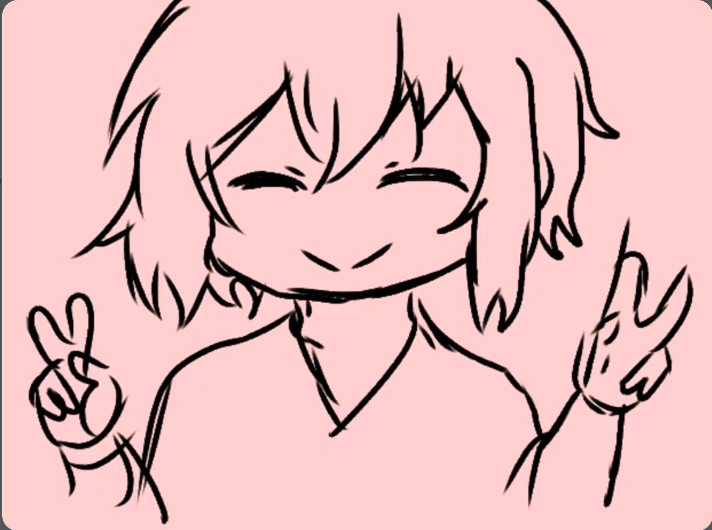

A fifteen-year-old illustrator from the South. I work in inks, soft pastels, and the occasional quiet afternoon — making characters that feel like half-remembered friends.

I started drawing before I could write full sentences. My older brother would leave sketchbooks on the kitchen table and I'd fill them with tiny people — wide eyes, soft hair, peace signs. I still draw the same girl, over and over. She looks a little like me and a little like nobody at all.
Most of my work lives between manga and memory. I love lines that tremble a little. I love pink, but only the pink of old flower shop signs. I love the moment before a drawing is finished, when it still has the possibility of becoming something else.
mostly ink. sometimes tea stains. always honest.

I don't really know what I'm doing yet — but I know the hand keeps moving, and the paper keeps saying yes.
I trade sketches for kind words and occasionally boba. For commissions or just to show me your cat, reach out below.